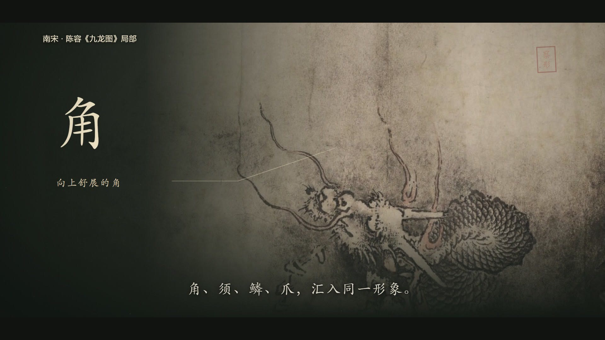

金佳信 JIN JIAXIN · 2027 届
视频作品集
用代码生成影像、用 AI 生成画面，也做商业投放素材。记录从内容制作走向 AI 应用与程序化创作的实践。


01 · PROCEDURAL FILM
程序化影像
不依赖剪辑软件的时间轴，用 React 代码描述画面、镜头与时间轴，由 Remotion 逐帧渲染成片。这是我从内容制作走向 AI 应用与工程实践的主要尝试。
120秒成片时长
2K母版 2560×1440
3次V1→V3 完整迭代
0配音轨，仅程序化拟音
程序化影像 · VIBE CODING
《中国龙》V3
我的第一条全流程 vibe coding 影像作品：由 AI 编程助手 Codex（GPT-6.1 Astra）以代码构建画面、动效与时间轴，本人负责选题、知识脚本与旁白底稿、审片和迭代决策，历经三次完整重制。成片以中国龙为文化形象，观察它如何连接自然经验、器物、礼制与共同想象。
REACTTYPESCRIPTREMOTION程序化拟音CODEX
- V1方向验证
26 秒竖屏 Demo，验证龙形与节奏方向
- V2结构重制
扩至 120 秒横屏，加入原创程序化拟音
- V3最终版
龙形、美术与镜头运动全面迭代，2K 母版交付
- 母版 2560×1440 / 30fps / 120 秒；本页为 1080p 压缩版
- 无配音轨，声音只用纸卷、墨、水、空气、玉石与青铜联想的设计性拟音，便于后期自行录制旁白
02 · AIGC SHORTS
AIGC 短片
AI 生成画面与后期剪辑结合的短片，《候》附带可查看的分镜脚本。
AI短片
《悟空》
AI画面与节奏剪辑练习，1280×720网页版本。
03 · COMMERCIAL
千川投流素材
实习期间参与制作的抖音千川竖屏素材，内容包括产品露出、情景对白、卖点字幕和场景化表达。
¥5万最高单日素材消耗
15条日产精剪素材
70%→80%过审率变化
5条页面展示素材
千川素材
产品特写钩子
产品露出与卖点字幕。
千川素材
痛点对比情景
生活痛点与前后对比。
千川素材
角色推荐情景
角色对白与产品信息。
千川素材
生活场景切入
场景痛点与产品承接。
千川素材
问答式推进
对白节奏与信息推进。
04 · EDITING
剪辑练习
蒙版转场、多画面快切和短剧对白节奏的手上功夫练习，均为 1280×720 网页版本。
剪辑练习
色彩变化水波纹
色彩变化与水波纹效果，1280×720网页版本。
剪辑练习
城市 · 圆形揭示
蒙版转场与城市画面，1280×720网页版本。
剪辑练习
九宫快闪
九宫格画面与快切节奏，1280×720网页版本。
剪辑练习
情侣小短剧
对白节奏和画面衔接练习，1280×720网页版本。
05 · AI AGENTS
Agent 项目
个人用 AI 辅助开发的小工具。需求、边界与验收由本人提出，代码以 AI 辅助生成为主，目前仍在补齐独立排错与测试覆盖。
06 · ABOUT
个人简介
教育技术学专业学生，2027 届。已能稳定交付 AIGC 影像、程序化视频、选题脚本与人工选片质检；正在从内容 / AIGC 走向 AI 应用与智能体开发，代码以 AI 辅助生成为主，需求、边界与验收由本人提出，独立排错与工程能力仍在补齐。作品集持续记录个人练习和项目。